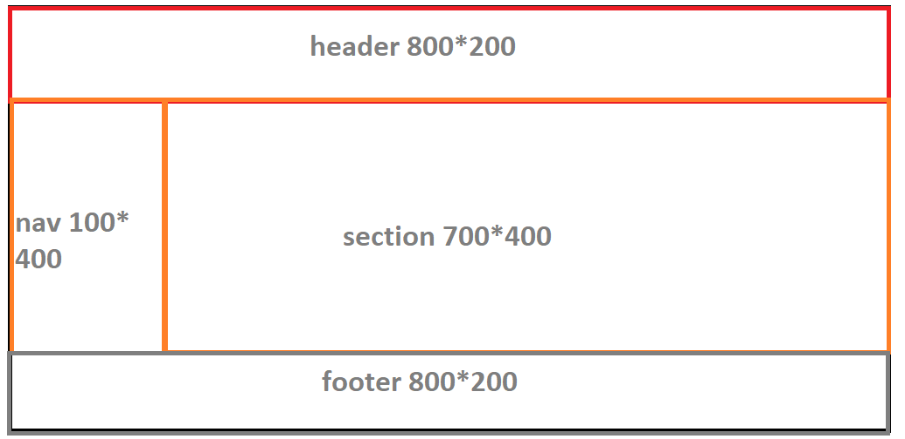

JavaSript
Знакомство с JavaScript
- Что такое JavaScript
- Какая лексическая структура?
- Пример выполнения джаваскипта
- Переменные
- Зарезервированные слова
Брендан Эйх
Как и у любого язык программирования, основная задача Javascript создавать последовательность
действий, которые будут приводить к определенному результату.
Это могут быть условия «если-то», циклы, которые создают определенную последовательность
действий, математические вычисления и.т.д.
Самое главное в том, что все эти операции можно производить на веб-страницах, в окне браузера.
Причем, javascript может работать и без подключения к сети Интернет.
Лексическая структура — это набор правил которые выполняются в языке.
- JavaScript - Чувствителен к регистру
- JavaScript - Игнорирует пробелы и табуляции
- JavaScript - Инструкции должны заканчиваться точкой с запятой
| 1 | var output = "Начинаю считать" |
| 2 | for (var i = 0; i < 10; i++) { |
| 3 | var counter = counter + 1; |
| 4 | document.write(<br> + counter) |
| 5 | } |
| 6 | |
| 7 | |
| 7 | |
| 8 | |
| 9 |
JavaScript-приложению обычно нужно работать с информацией. Например:
Интернет магазин – информация может включать продаваемые товары и корзину покупок.
Чат – информация может включать пользователей, сообщения и многое другое.
Переменные используются для хранения этой информации.
Переменная – это «именованное хранилище» для данных. Мы можем использовать переменные для хранения товаров, посетителей и других данных.
Интернет магазин – информация может включать продаваемые товары и корзину покупок.
Чат – информация может включать пользователей, сообщения и многое другое.
Переменные используются для хранения этой информации.
Переменная – это «именованное хранилище» для данных. Мы можем использовать переменные для хранения товаров, посетителей и других данных.
Cоздание переменной
Для создания переменной нужно
| 1 | var name = data |
| 2 | var userName = Ivan |
| 3 | var userPhone = 0930000000 |
| 4 | var human = true |
- Создать ключевое слово
- Добавить имя переменной
- По необходимости добавить даные которые будут в переменной
Название переменной не должно начитантся с цифры или разделятся
пробелом
| 1 | |
| 2 | |
| 3 | |
| 4 | |
| 5 | |
| 6 |
- Число «number»
Единый тип число используется как для целых, так и для дробных чисел. Существуют специальные числовые значения Infinity (бесконечность) и NaN (ошибка вычислений).1 var n = 123; 2 n = 12.345; - Строка «string»
В некоторых языках программирования есть специальный тип данных для одного символа. Например, в языке С это char. В JavaScript есть только тип «строка» string. Что, надо сказать, вполне удобно.1 var str = "Мама мыла раму"; 2 str = 'Одинарные кавычки тоже подойдут'; - Булевый (логический) тип «boolean»
У него всего два значения: true (истина) и false (ложь). Как правило, такой тип используется для хранения значения типа да/нет.1 var checked = true; // поле формы помечено галочкой 2 checked = false; // поле формы не содержит галочки - Специальное значение «null»
Значение null не относится ни к одному из типов выше, а образует свой отдельный тип, состоящий из единственного значения null:
В JavaScript null не является «ссылкой на несуществующий объект» или «нулевым указателем», как в некоторых других языках. Это просто специальное значение, которое имеет смысл «ничего» или «значение неизвестно». В частности, код выше говорит о том, что возраст age неизвестен.1 var age = null; - Специальное значение «undefined»
Значение undefined, как и null, образует свой собственный тип, состоящий из одного этого
значения. Оно имеет смысл «значение не присвоено».
1 var x; 2 alert( x )
break
delete
function
return
typeof
case
do
if
switch
var
catch
else
in
this
void
continue
false
instanceof
throw
while
debugger
finally
new
true
with
default
for
null
try
class
const
enum
export
extends
import
super
implements
let
private
public
yield
interface
package
protected
static
- Сверстать страницу подобную макету с помощью document write 
- Создать 3 переменных которые перед загрузкой страницы спросят у пользователя
Имя
Фамилию
Возвраст
и выведут данные на страницу которую мы ранние сверстали. - Получите 3 числа от пользователя и выведите среднее арифметическое